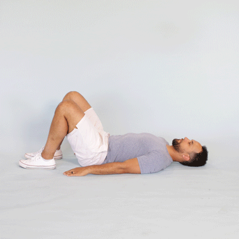
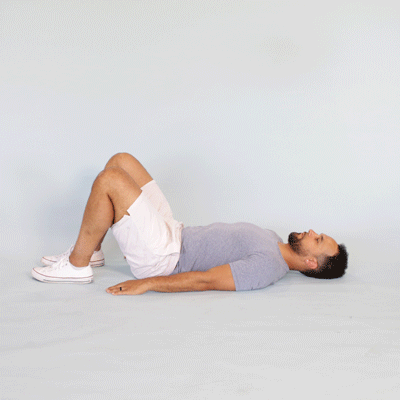

3 reps - 3 sets - 30 seconds - 2× daily
- Start in the half kneeling hip flexor stretch (image 1). Lean into the front leg so that you’re stretching the front hip on the back leg.
- Hold for 30 seconds. Feel free to add extension (as depicted), rotation or side bending of the spine in this position.
- Slowly transition into the hamstring stretch by leaning backward and straightening the front leg (image 2). Really fold forward on top of the front leg.
15 reps - 2 sets - 1× daily
- Begin on your hands and knees with your head and back in a straight position. Hands should be under your shoulders, hips directly above knees.
- Activate core muscles. Raise one arm to shoulder level as opposite leg simultaneously lifts off floor, extending to hip height. Pause momentarily. Return to start position and alternate sides.
- Maintain a straight spine position, not allowing your hips to twist or rotate.
- Do not hyper-extend low back when extending leg. Repeat for prescribed repetitions and sets.

10 reps - 3 sets - 1× daily
- Begin standing with your feet 12 inches apart in an area that allows 5 feet in front.
- Activate core muscles. Step forward approximately 3 feet. Lower body until front thigh is near parallel with floor. Back leg is bent with knee 3–4 inches off floor.
- Majority of weight should be placed on heel and mid foot of forward leg. Knee should maintain alignment with second toe and not glide past foot.
- Reverse the movement as you return to start position. Repeat alternating sides for prescribed repetitions and sets.
2 reps - light stretch force 30 second holds - 2× daily
- Begin seated on floor. Extend one leg while other is flexed inward. Maintain good posture, positioning self on sit bones (ischial tuberosities).
- Spine is in neutral position with a flat lower back.
- Maintaining a flat back posture, lean and reach forward until a gentle stretch is felt behind straight leg.
- Hold for 30 seconds. Repeat for prescribed repetitions and sets. Alternate sides as instructed.
20 reps - 2× daily
- Begin on floor on hands and knees. Hips should be above knees and shoulders above hands. Attain a straight spine position.
- Round your back upward, stretching mid-back between the shoulder blades. Relax and let your stomach fall downward as you arch your back.
- Hold each position 3–5 seconds and repeat for prescribed repetitions and sets.

 
